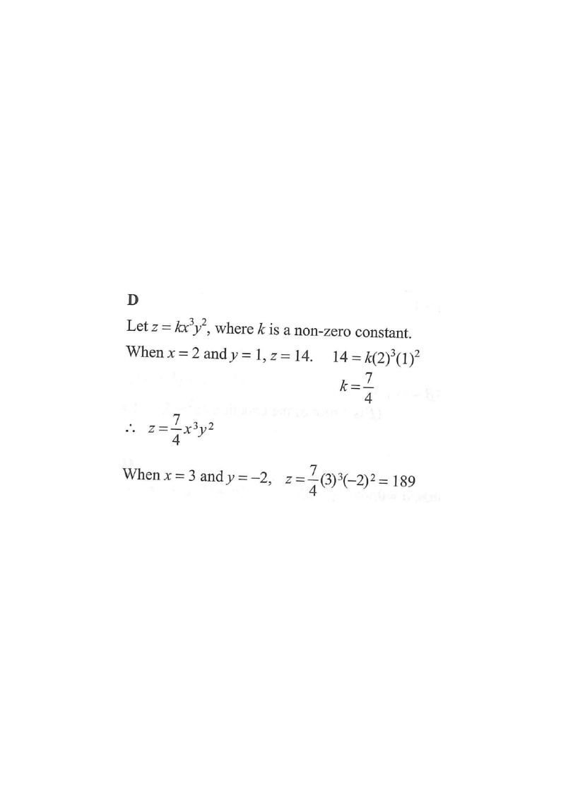

Step 1 — Given: $z$ varies as $x^3$ and $y^2$; $x=2,\;y=1 \Rightarrow z=14$.
HKDSE 2015 · Paper 2 · Q12
It is given that $z$ varies as $x^3$ and $y^2$. When $x=2$ and $y=1$, $z=14$. When $x=3$ and $y=-2$, $z=$
A. $-189$
B. $-126$
C. $126$
D. $189$

Figure (original exam diagram)
1 Set up the variation equation
Joint Variation\(z\propto x^{3}y^{2}\ \Longrightarrow\ z=k\,x^{3}y^{2}\)\(z\) varies jointly as \(x^{3}\) and \(y^{2}\), so a single non-zero constant \(k\) links them.
\[ z \propto x^3 y^2 \quad\Longrightarrow\quad z = k\,x^3y^2 \]
Hint: "$z$ varies as $x^3$ and $y^2$" means $z$ is jointly proportional to $x^3$ and $y^2$. Introduce a non-zero constant $k$.
2 Substitute the given values to find $k$
Constant of Variation\(14=k(2)^{3}(1)^{2}=8k\ \Longrightarrow\ k=\dfrac{7}{4}\)Substituting \(x=2\), \(y=1\), \(z=14\) determines \(k\) before any new value is computed.
Hint: The $\tfrac{7}{4}$ and the $4$ from $(-2)^2$ cancel, leaving $7 \times 27$.
ANSWER$z = 189$ → Option D
PRACTICESimilar question — try it yourself
Question. It is given that \(z\) varies directly as \(x^{2}\) and \(y^{3}\). When \(x=3\) and \(y=2\), \(z=72\). Find the value of \(z\) when \(x=-2\) and \(y=3\).
Show the worked solution
Step 1. Write \(z=k\,x^{2}y^{3}\), where \(k\) is a non-zero constant.